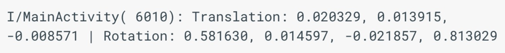
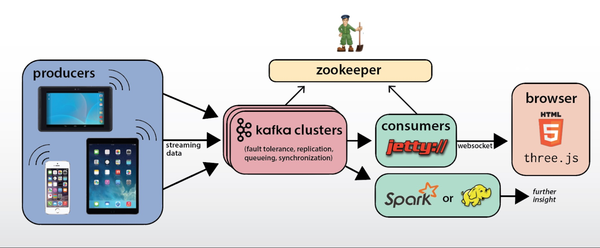

Streaming Data
Overview
For Big Data Research Day 2016 at Boston College, I built a demonstration to breakdown how smartphone data is sorganized, streamed and processed in realtime for apllications such as mobile VR. Here is the resulting paper from this research. On Github here.
Smartphones and tablets have incredible hardware built into their systems, but more often than not, the software built for the devices doesn’t tap into it. This project seeks to explore the methods in which massive amount of data points from a mobile sensor can be reliably and quickly reported to a remote server. Thus, with our software we set out to help the layman understand the practical applications of accessing smartphone data streams by reliably transmitting it from a mobile device to a processing service. From mobile Virtual and Augmented Reality, UI/UX research, gaming, navigation and more the applications for transmitting information from mobile devices to servers are endless. We wanted to be able to process and visualize the data coming off the device wirelessly. From the get-go, a number of problems became very clear to us.
Understanding the Data
Of the four V’s that describe the difficulty in managing and working with ‘Big Data’ (volume, variety, veracity and velocity), velocity was the biggest hurdle for us to overcome. The Android tablet we were working with was designed for SLAM applications thanks to its extremely precise sensors and a 2.3Ghz, quad-core mobile processor. As a byproduct of such powerful hardware, our model was capable of producing a ton of data in very little time. In addition to the speed in which the data was being offloaded from the tablet, we needed to find a reliable way to transport the data stream object on the android device to a central server where it can be processed and/or visualized such that a client with limited knowledge of data streams, linear transformations and euler coordinates could understand what the data coming off the tablet represented. Creating a proper visualization of the 3D axis, and transformations became the final major issue for us to tackle given the mentioned properties of our data.
Although the Project Tango device is capable of producing nearly 250,000 data points per second, we understood the complexity associated with processing a live data streams. Additionally, we didn’t want to clog our project with any extraneous data that wouldn’t be vital to our end goal of helping a non-technical person understand the practical applications of such sensor data. Our work focused on the Rotational data that came in in 4 parts (quaternion) from the tablet. More info on a quaternion (from cprogramming):
A quaternion represents two things. It has an x, y, and z component, which represents the axis about which a rotation will occur. It also has a w component, which represents the amount of rotation which will occur about this axis. In short, a vector, and a float. With these four numbers, it is possible to build a matrix which will represent all the rotations perfectly, with no chance of gimbal lock.
Programming Paradigm
There were multiple layers of communication involved in reliably transmitting the sensor data from the tablet to the processing server. Due to the nature of Kafka, and the size of the Kafka library, mobile devices are not recommended to be used as Kafka producers. Kafka is intended to permeate and manage messages, but not necessarily be the the communication agent between devices. For that reason all of the sensor readings were sent through a socket from the mobile device to a host Java instance on the remote server. One the host Java instance received the sensor reading it writes the message to a Kafka topic. By writing to the Kafka topic as soon as the sensor data reaches the server we ensure that no messages get lost, and that we are able to create a robust stream.
The Kafka consumer is a Jetty server process running on the same remote server. The Jetty server consumes Kafka messages from the the sensor data topic and relays those messages to the frontend javascript instance through a Websocket. Kafka consumers cannot be implemented in frontend javascript, so this paradigm must be used. Once the javascript instance, running in an observer’s browser receives the sensor data it uses it to update a 3D graphic on the screen. Using the producer consumer paradigm allows us to have a very generalizable solution for multiple streams and the system could easily be extrapolated to work to receive multiple different types of data from the tablet. Using a queue based paradigm allows for elasticity in the consumption of messages; if the end of the line of communication slows down or pauses the system is safe due to Kafka’s permeation of data. The durability of the system ensures no messages get lost and that the system is pause tolerant. Below is the Server class that sends Kafka KeyedMessages through the socket.
Analysis and Conclusion
Although our project did not leverage machine learning algorithms or make predictions, it was still an extremely valuable exercise for a number of reasons. Primarily, we became much more proficient in working with data streams, streaming objects and how they should be dealt with when communicating between servers and layers. In many enterprise instances of Apache Spark, a live data stream is coming in; rarely a backlog of data in a clean .csv file. Likewise, we familiarized ourselves with Kafka, an industry standard tool for breaking data streams into individually analyzable and fault tolerant chunks. Our animation ended up inducing a noticeable amount of lag time, but this too taught us a valuable lesson: Kafka is not optimized for realtime data visualization, and that the flow of data through a system should occur through as few layers as possible. The point in our system architecture where the data is sent to the browser is the most appropriate place to add an instance of Spark into the mix as the data queuing from Kafka was already set in place. Additionally, the animation smoothness would benefit from comming directly from the tablet instead of the Kafka channel
Project by Ryan Reede and Cam Lunt.